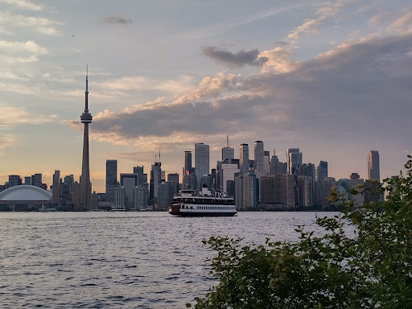
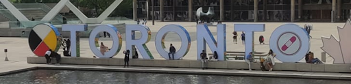
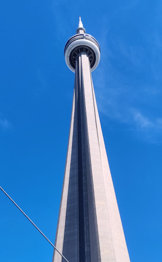

Soham Purohit - University of Toronto
Summer blog #x? More like Travel Blog #1 (laughs in non-corporate)…
Hello everyone, I am Soham Purohit, a final year undergraduate in the Department of Mechanical Engineering, and an Editorial Board Member of Insight. I did my research internship at the Microrobotics Laboratory at the University of Toronto under the guidance of Prof. Eric Diller through the MITACS program. You can expect this blog to be littered with random Toronto skyline images to stay true to its travel blog genre.
Getting an Intern Without Giving an Interview
I’ll first talk about how I (barely) navigated through the internship season, although, at the end of it I got a very clickbait title for this section of my summer blog.
I had always been enthusiastic about research before coming to IITB, and I acted upon that interest by trying out research projects during the semester and summer breaks. I developed a keen interest in Systems and Control after doing several courses and a research project under Prof Ravi Banavar, hence, by the time the internship season arrived, I was pretty sure I wanted to do a research project at a university (preferably abroad).
The worst part of these internships is the sheer uncertainty of getting one, the lack of support through the PT Cell (you have to apply externally in most cases), no single straightforward way of going about getting an intern, and the delayed acceptances compared to the PT Cell internships. Seeing all your friends sign IAFs and get featured on the InstiApp along with #craxmachaxx and #summersorted stories on Instagram led to a lot of FOMO.
There are two paths one takes: apply to a scholarship program like DAAD (Germany) and MITACS (Canada), and also cold mail professors asking them for openings. For DAAD, you have to first get an acceptance from a professor through cold mailing before you can apply to get funds, whereas, for MITACS, there is a portal that allows you to choose projects and give a preference order for the same. Hence, MITACS has a fixed set of guidelines and is generally more reliable than DAAD. Your application requires you to submit a 500-word SOP/motivation, your research experience and achievements (250 words each), your CV, your transcript, and a letter of recommendation. Further details can be found on their portal.
Fear started to set in by November when most of my friends had landed craxmachax corporate interns, and I had missed the DAAD deadline because I had been too lazy to start apping (this was a really terrible move, always start in September). Even my research-enthu batchmates who had applied to MITACS were getting called for interview after interview whereas I did not hear a peep from professors on my end. In desperation, I started cold mailing.
One fine December morning, I received an acceptance mail from MITACS, from the professor who had been my first preference. Was it sheer luck (definitely) or a super strong application (believing this helps me sleep better at night)? This was a real blessing for me, as I had started to panic thinking about how NOT sorted my summer was.
The internship
Fast forward to Toronto, a few months later and 10000 km away. I was made to work on an independent project under two supervisors from the professor’s lab, a Ph.D. student, and a post-grad. The project was to validate an embedded shape sensing method based on permanent magnets for the shape sensing of continuum robot segments. In simple words, I had to design and build an experimental setup and experimentally validate the method which had been developed by one of my supervisors. There were several setbacks and frustration when theoretical results did not translate to real-world results, but this made me realize how research is built upon several failures. It was an overall enriching experience that made me decide to pursue research further.
Speaking of my expectations from the internship, this was a completely new experience for me as I had expected it to be a controls internship but it turned out to be a magnetic robotics internship, but it was one of the best experiences of my life. I had complete flexibility in how I wanted to take the project forward and how long I wanted to work on it each day. There was no imposition or pressure from any superior and everyone was extremely helpful and approachable.
Coming to the campus experience, I had fears regarding the availability of food (being a vegetarian) and racism (oddly specific priorities, I know xD). However, I can gladly say that I had no issues with either of them. The funds that are provided to you are more than sufficient not just for living and other necessities, but also for traveling and having a hell of a time. A typical week would look like me working for however long I wanted on weekdays, and going places on weekends (and sometimes weekdays too :p). From watching Harry Potter and the Cursed Child and Drake singing “I Want It That Way” with the Backstreet Boys, to becoming an Instagram influencer, it was a wild experience, to say the least, and one I would endorse to anyone who asks.
A final word of advice to anyone who asked (since you’re reading this, I assume you did): start apping early, don’t get demotivated by what others are doing, and focus on yourself. Finally, the truth is, not getting an internship does not mean your summer is not sorted and is DEFINITELY not an indication of your capability. Get started with your BTP and aim for a publication, try to search for online internships, improve your own skills through online courses, and most importantly, never give up the grind. Random photo to end this travel blog:
